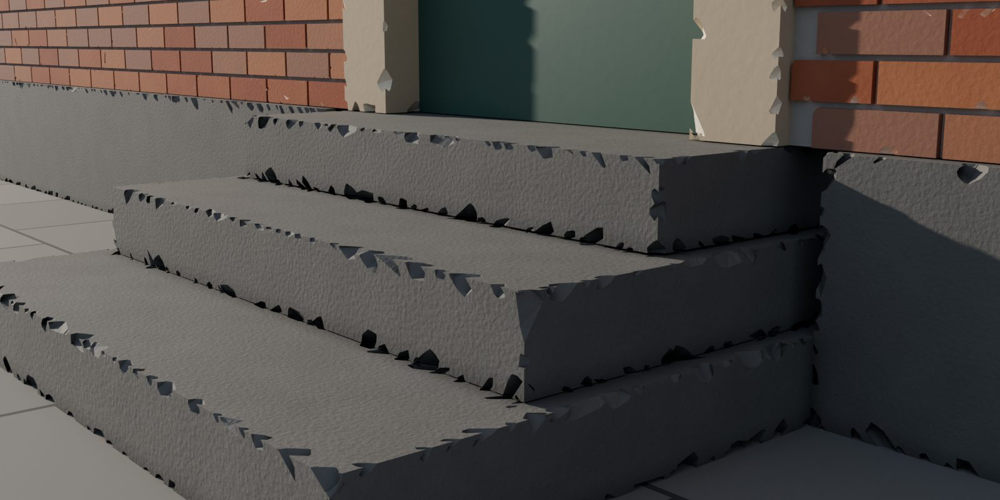
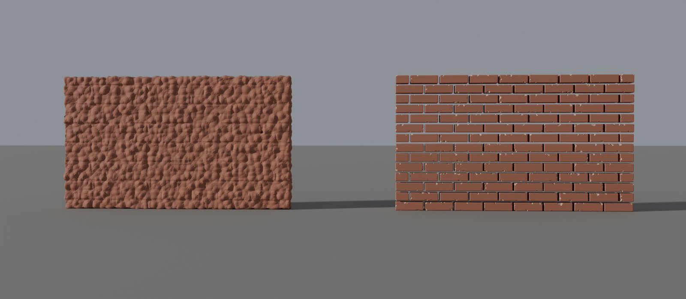
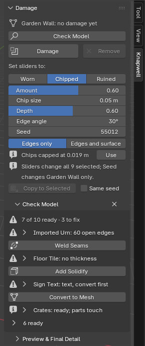
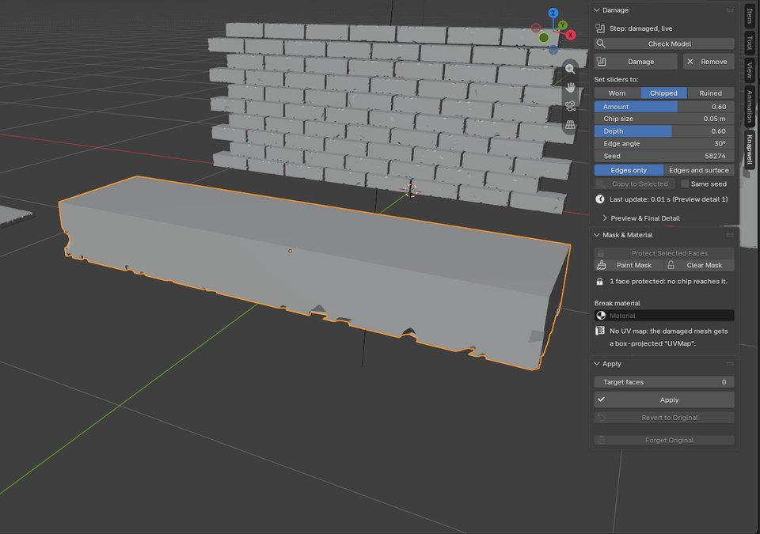
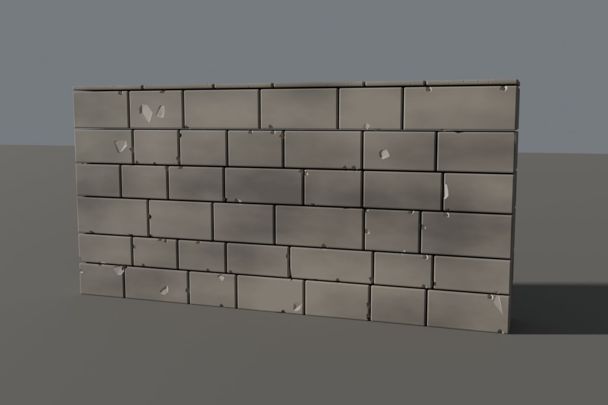
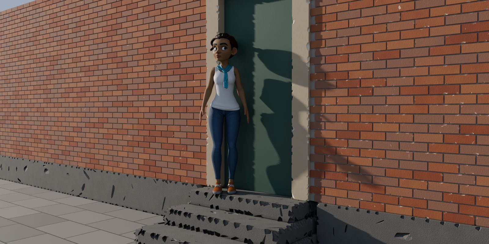
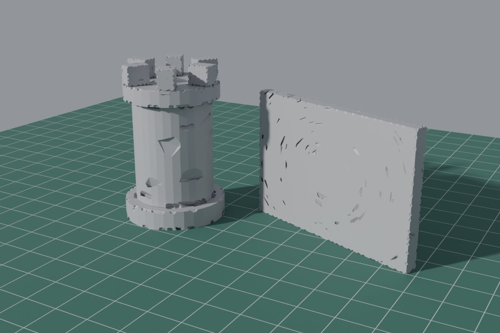

Knapwell for Blender
Chipped edges that keep separate bricks separate.
Select your meshes, press Damage: real chipped geometry, at a chip size in metres. Every brick or block stays its own part, and Revert brings the original back, even after Apply.
One payment, source included, updates at no charge.
Blender 4.5 LTS to 5.2 LTS · 14-day refund

A render of our own granite steps and brick wall, chipped by Knapwell: the steps at the Worn look with a smaller Chip size and more Amount, the bricks at Ruined with a smaller Chip size.
Watch it work
Remesh melts your bricks. Knapwell chips them.

- Many objects at once. Select them all and press Damage. Worn, Chipped and Ruined set the sliders; the damage stays live and editable until Apply.
- Chip size in metres. The same physical size on every object, whether or not its scale is applied. On thin parts, such as real-size bricks, chips are sized to fit the part.
- Imported models too. Check Model finds split seams, holes and sheets, and fixes them in one click each: Weld Seams, Fill Holes, Add Solidify.
- Keep a doorway clean. Protect the faces you select; give the broken faces a material of their own. Every other face keeps its material and UVs.
- Apply for export, Revert any time. Apply makes it plain mesh with outward normals; Target faces reduces it for a game. Revert brings the original back even after you reopen the file.
In the panel


Made for

Game kits. Each block of a wall module stays a closed part. Target faces reduces the result for the engine: our 46-block castle wall (2,484 faces) at Target 9,936 came out at 9,710 faces, 25,316 triangles, 560 chips.

Archviz. Old steps, sills, plinths and facades, in a metre or a centimetre scene. A wall that is a plane with a Solidify modifier works without applying it.

Tabletop. Type the chip size in millimetres. After Apply, each of our test pieces gave a watertight STL, as long as its parts do not touch each other; Check Model says when they do.
Install
- Download
knapwell-1.4.1.zipfrom the link in your checkout email. Do not unzip it. - In Blender, Edit > Preferences > Get Extensions, the menu at the top right (⌄), Install from Disk..., and pick the zip.
- Press N in the 3D Viewport and open the Knapwell tab.
If Blender asks about internet access, Continue Offline is fine: Knapwell needs none. First steps: Knapwell quick start. The full manual is inside the zip.
Who doesn't need it
- You enjoy sculpting each chip by hand, or you only need wear in the render: a bevel or displacement shader does that without new geometry.
- You want to break objects apart, draw cracks, or add rebar and debris: Knapwell does none of that. Cell Fracture (free) or a destruction tool will.
The details
How we tested
Every release runs the full test suite headless on the official Linux builds of Blender 4.5.15, 5.0.1, 5.1.2 and 5.2.3. Each test model is damaged at each starting look, at Preview and at Final detail, and every run must lose no loose part, leave no face pointing inward, and keep 60 to 100% of the volume.
12 purpose-built models, ours and built in code: a wall of 119 separate bricks, a fluted column, stone stairs, a statue bust, an arch of 21 stones, a barrel, a 52-part kitbash crate, converted text, a rock, a window frame, a pillar with bevels, and a 110,221-face carved panel. Third-party imports: four CC0 models from the Khronos glTF samples (a water bottle, a lantern in three objects, an avocado, a chair's fabric), as they arrive, split at UV seams, with holes; each goes through Weld Seams and Fill Holes, then Damage.
Speed, one slider change in the viewport (Preview detail), median of three runs, Blender 5.2.3 on a 4-thread Intel Xeon at 2.10 GHz with no GPU (geometry runs on the CPU). Your times depend on your computer and your model.
| Look | Median, 12 models | Slowest of the 11 models up to 47,000 faces | 110,221-face panel |
|---|---|---|---|
| Chipped (default) | 0.26 s | 0.38 s | 1.78 s |
| Ruined | 0.38 s | 0.53 s | 1.71 s |
Game asset numbers for the 46-block castle wall above (2,484 faces, 4,968 triangles), Ruined, seed 7. Target faces counts Blender faces; a game engine counts triangles, and the Apply report gives both.
| Target faces | Faces after Apply | Triangles | Chips |
|---|---|---|---|
| 4,968 (twice the model) | 4,915 | 11,760 | 205 |
| 9,936 (four times) | 9,710 | 25,316 | 560 |
| 0 (off: the full result) | 69,180 | 197,234 | 1,918 |
Tabletop STL. Five pieces of ours (a 5 cm tower, a Solidify wall piece, and in a millimetre scene a wall with a doorway, a column drum and a base tile), Ruined at 4 mm and 1.5 mm chips, applied and exported with Blender's STL exporter: in every file each edge is shared by exactly two triangles, and PrusaSlicer's command line read each as manifold and sliced it. We have not printed them. Parts that touch each other (crates stacked face to face) are the exception: leave a 0.2 mm gap, or join them first.
Known limits
- Closed meshes only. Check Model fixes split seams, holes and sheets; curves and text must be converted to a mesh first.
- Loose parts that overlap are chipped as one where they overlap. Parts that touch give an STL that is not watertight where they touch.
- Chips can knock a small fragment loose where two chips meet at a corner; compare Check Model's loose-part count before and after Apply if that matters for a print.
- A collection instance at another scale shows chips at that scale; Check Model's Make Instances Real button fixes it.
- Masks protect whole faces, with no soft falloff. Fill Holes caps every hole, including a window that should stay open.
- Thin parts get smaller chips, and models with many thin parts update more slowly. Large models (over 100,000 faces) take one to two seconds per change.
- No cracks, fracture, rebar, debris, grime shaders or wood splinters. English only.
- Tested on the official Linux builds of Blender. Windows and macOS have not been tested yet; Knapwell uses only Blender's own Python API, but that is not a test. Tell us if anything behaves differently.
Buying, licence, privacy and support
- Secure checkout by Polar; the download arrives by email. $15 for one artist, every feature, updates at no charge. No subscription, no licence key, no account. A studio licence for up to 10 artists is $49: write to support@ochrestack.com.
- If it doesn't work as described and we can't fix it, email us within 14 days for a full refund (terms).
- GPL-3.0-or-later; the full source is in the zip.
- Privacy: Knapwell makes no network calls. It reads and writes only the open .blend file and collects nothing.
- Support: support@ochrestack.com, with your Blender version, your operating system and, if you can, the .blend file or a screenshot of the Knapwell tab.
- Knapwell was called Spallwork until version 1.4.0.
About the images
The steps, the wall comparison, the facade, the castle wall and the tabletop pieces are Cycles renders of scenes we built in code, damaged by pressing Knapwell's own buttons and rendered as F12 would, at Final detail. Nothing was painted on them. The two panel images are screenshots of a real Blender 5.2.3 window on Linux at 1920x1080 with the Knapwell zip installed through Blender's extension installer; every click in that session was a real input event. The comparison's left wall uses Remesh at 0.01 m and Displace with a Voronoi texture.
The demo video was recorded in the same way at 2560x1174, one real input step and one window redraw per frame, so waits take no screen time; the pointer and its click rings are drawn by the edit where the log puts them, and the push-ins are crops of the captured frames. The last shot is a slow push-in on the Cycles render at the top of this page.
Character: Rain Rig (CC) Blender Foundation | studio.blender.org, used under CC BY 4.0, placed in a scene of our own. Rain is not included with Knapwell, and Blender Studio does not endorse it.
One payment, source included · Blender 4.5 LTS to 5.2 LTS